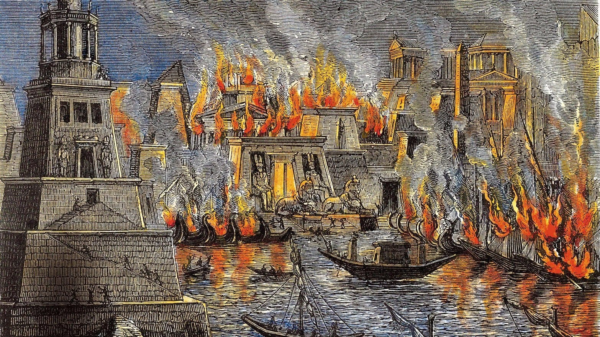

A "Guerra do Manguito" ocorreu em 1844 entre a França e a Prússia, a partir de um mal-entendido diplomático sobre uma peça de roupa chamada "manguito", usada por um diplomata prussiano em um evento formal em Paris. A peça, que poderia ser vista como informal demais para a ocasião, foi interpretada pelos franceses como uma afronta à etiqueta e ao protocolo, gerando uma troca de ofensas entre os dois países. Esse pequeno incidente foi exacerbado pelo orgulho nacional e pela rivalidade crescente na Europa, fazendo com que a situação quase levasse a um conflito armado. Embora o incidente tenha sido resolvido sem violência, a "Guerra do Manguito" ilustra como questões de etiqueta e protocolo eram levadas a sério nas relações internacionais do século XIX, podendo até escalar para tensões diplomáticas. O episódio é um exemplo curioso de como um pequeno gesto pode gerar grandes repercussões políticas e de como a honra e a percepção pública influenciavam as negociações e o comportamento entre as potências europeias da época. A Biblioteca de Alexandria, fundada no século III a.C., foi um dos maiores centros de conhecimento do mundo antigo, reunindo obras de diversas culturas e se tornando um símbolo da busca pelo saber. No entanto, seu destino permanece envolto em mistério. O incêndio mais famoso, ocorrido em 48 a.C. durante o cerco de Alexandria por Júlio César, destruiu parte da biblioteca, mas acredita-se que ela já tivesse sofrido danos antes, com incêndios e saques ao longo do tempo. Esse evento é frequentemente apontado como um golpe fatal para a biblioteca, embora existam outras teorias sobre sua destruição gradual ao longo dos séculos. A perda da Biblioteca de Alexandria é vista como uma das maiores catástrofes culturais da Antiguidade, representando a fragilidade do conhecimento diante das guerras e mudanças políticas. Além do incêndio de César, alguns acreditam que a biblioteca tenha sido severamente danificada em momentos posteriores, como durante a repressão ao paganismo no Império Romano, ou que o conhecimento nela contido tenha sido disperso e perdido ao longo do tempo. O fim da biblioteca é um símbolo da constante luta para preservar o saber humano diante das forças da destruição e do esquecimento. A "Guerra do Manguito":
A biblioteca de Alexandria e o incêndio misterioso: